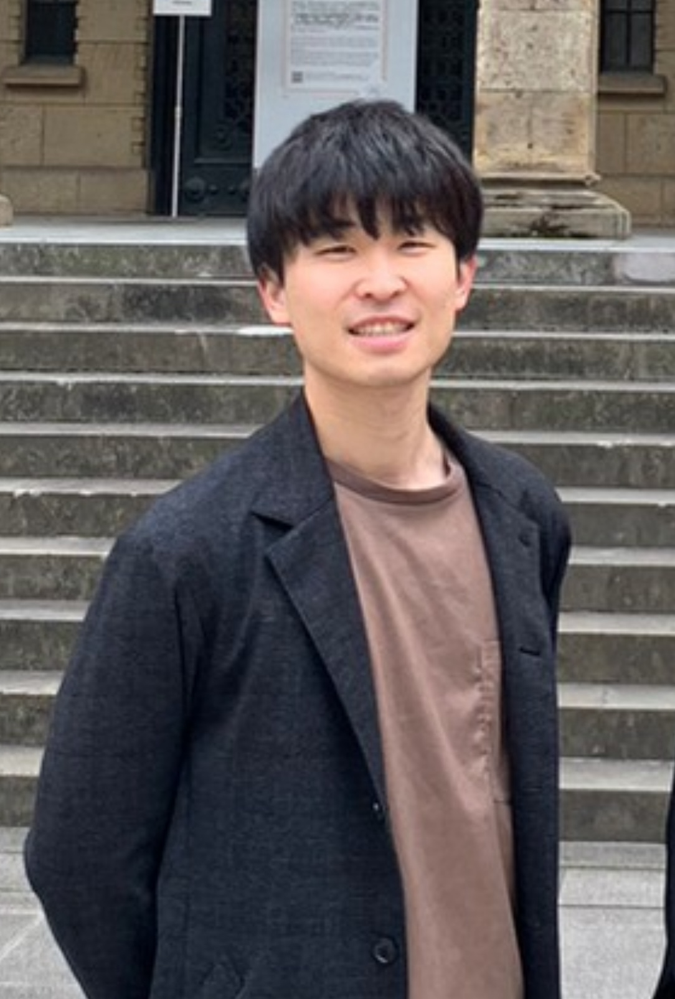

小関裕介/Koseki Yusuke
東京大学大学院 情報理工学研究科 知能機械情報専攻 葛岡鳴海研究室 修士2年
Graduate School of Information Science and Technology, Kuzuoka-narumi Lab, the second year of a Master's program
Contact : koseki[at]cyber.t.u-tokyo.ac.jp
Research topic & interests
Human Computer Interaction, Virtual Reality, Avatar, Taste perception, Geron-technology
News(下にスクロールできます)
- 東京大学大学院情報理工学系研究科博士課程に入学しました(1 Apr 2025)
- IARU/Aging Longevity and Healthの若手研究者ネットワークにて研究発表を行いました(27 mar 2025)
- 東京大学大学院情報理工学系研究科修士課程を卒業しました(24 Mar 2025)
- Augmented Humans学会でポスター発表(主著)を行いました(19 Mar 2025)
- SPRING GX（博士課程学生支援）に採択されました(17 Mar 2025)
- Oxford大学で行われたIARU/Aging Longevity and Health Initiative Research Conferenceにて参加・発表しました(2 Oct 2024)
- MVE学会で, 下方視野を拡大したHMDを用いたアバタの視覚情報提示が風味知覚に与える影響の基礎検討に関する口頭発表(主著)を行いました(26 Sep 2024)
- Virtual Reality学会で, 鳥アバタを用いたVR体験が昆虫食受容に与える影響(主著)について, 口頭発表を行いました(12 Sep 2024)
- MVE学会賞を受賞しました(12 April 2024)
- Frontiers in Virtual Realityに老人プライミング効果と老人歩容アバタを用いた歩行速度の変化に関する主著論文の採録が決まりました(10 April 2024)
- MVE学会で, 対話者アバタの融合身体的ミラーリングが相手の印象に与える影響に関する口頭発表(主著)を行いました(14 Mar 2024)
- 日本バーチャルリアリティ学会学会誌に会議参加報告をしました(31 Mar 2024)
- SIGGRAPH Asia学会で, アバタの身体サイズ/サイズ遷移が飲料の風味知覚と身体所有感に与える影響に関するポスター発表(主著)を行いました(13 Dec 2023)
- 東京大学の国際卓越大学院プログラム WINGS-GLAFSに採択されました(29 Sep 2023)
- International Conference on Human-Computer Interaction学会のLeaderboard Awardで2位になりました(28 July 2023)
- International Conference on Human-Computer Interaction学会で, 老人歩容アバタが歩行速度に与える影響に関する口頭発表(主著)を行いました(24 July 2023)
- 応用情報技術者試験に合格しました(29 Jun 2022)
- 42Tokyoに合格しました(15 Apr 2023)
- Virtual Reality学会で, 並走するバーチャルアバタによる歩行速度変調と老人プライミングの関係(主著)について, 口頭発表を行いました(13 Sep 2022)
- JDLA Deep Learning for ENGINEERに合格しました(10 Mar 2022)